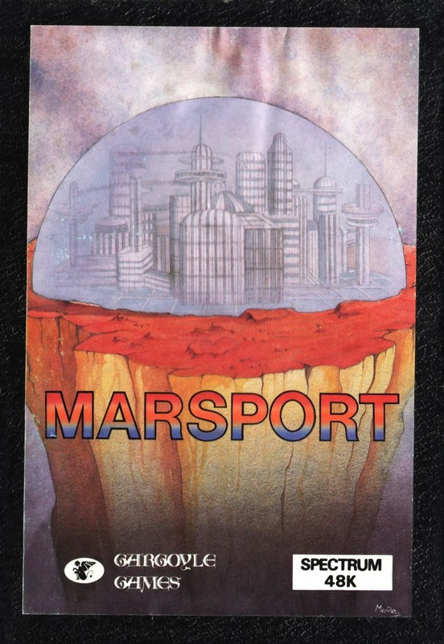
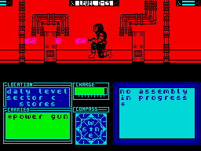

Marsport


{kind=link}

| Publisher: | Gargoyle Games |
| Price: | £9.95 |
| Year: | 1985 |
| Source: | CRASH, Issue 22 |

Gargoyle Games have (temporarily?) abandoned the distant past jumping to the distant future as a setting for their latest game. Marsport, the first in a trilogy of games, begins at a time when the human race is having problems with a race of evil aliens.
The Earth and Moon are defended from the xenophobic alien race known as the Sept by a massive spherical force shield in space. The problem is, the Sept have discovered a way of breaching the field. Deep within the central computers of Marsport, now a Sept stronghold, are the original plans for the construction of the barrier which detail how it can be reinforced. They were hidden there by the barrier’s creator, Muller, who is now dead.
You play the character Commander John Marsh, of the Terran underground liberation movement. Your mission is to locate the central computer in the Marsport complex, recover Muller’s plans and then escape with them intact. Apart from the dangers presented by the aliens in occupation, you have to cope with the computer generated defence systems. Standing at the entrance to the spacefield, your first task is to locate and then charge a weapon, without which your mission is certainly hopeless.

Sept warriors patrol the corridors of Marsport; they are aliens about half your size who are deadly to the touch. In some passages you may find a Sept of the Warlord caste. They are large insect looking creatures who move only occasionally. If you should approach one, without having the right weapon to hand, a sting will lash out and — curtains.
Although you are warned of approaching Sept, you can never be sure from which direction they will arrive. Your energy gun comes in very handy.... Warden and Herald robots, part of the computer run defence system, patrol the corridors. Herald robots become significant later in the game and are harmless, while Wardens tend to mistake you for a Sept and try to blow you away.
Movement in Marsport is similar to that in Dun Darach, in that the character is moved to the left or right, via control keys, and the view may be altered through ninety degrees. At first this is disorientating, a compass at the bottom of the screen can be used to help you keep your bearings.
Sliding panels can be found set into some corridor walls. They’re labelled according to their function and open automatically when approached. Supply units do just that and are constantly replenished. Lockers are a safe storage device for items obtained (you may only carry up to three at a time). Sometimes these lockers are locked and you will have to put a certain object in the Key unit nearby in order to open the covering plate. Refuse units allow you to get rid of objects you no longer want — useful given that you can’t drop anything, and remember, you can always throw away unpleasant things. Power units provide power for objects that need it, such as your weapon, and finally Factor units manufacture a new object from other objects placed inside them. Factor units are essential — some of the things you need to complete your mission do not even exist until you create them!
Rooms in the complex are identified by a nameplate above the door. Rooms with ‘Danger’ above them mean that there is something to be wary of inside, while ‘Restricted’ rooms cannot be entered until you have located the central computer. Consequently, once the first part of the game has been completed, a lot more of the playing area opens up. Many rooms need a specific key to open them... so a little careful thought is needed.
The main action takes place in the top half of the screen, whilst the bottom half gives compass directions, details of object carried, weapon status and messages. Messages are received when you pass a Vidtex unit or when you are in the process of constructing another object. The bottom half of the screen also gives details of the area you are in.
The playing area in Marsport is estimated at being the size of Tir Na Nog and Dun Darach put together. Not a little game! Unlike Gargoyle’s previous two games, Marsport is not played on a flat plain. Instead, it is constructed like a 3D tower block. Each floor has a different function — for instance the Recreational area has a couple of little games that can be played. The levels are connected via a series of lifts that may or may not be one or two way.
Marsport features realistic 3D effects: John Marsh can stroll in front of and behind struts, and a lot of attention has been paid to the animation of his movements.
Unless you have a few weeks to spare, the game will need to be played in several sessions. Thoughtfully, Gargoyle have provided a save game routine which can also be used just before you do something especially tricky in case things don’t work out.
Once you do get the plans, the game isn’t over — you still have to escape from Marsport. Not a trivial task, but this time, Gargoyle have added quite an interesting feature to the end...
CRITICISM
‘I thought Marsport was far better than previous Gargoyle games because there really is so much more to do. The game is about the size of both the others put together and with the fighting, which is one of the highlights of the game, and the atmosphere of being totally alone, the whole thing is very well paced indeed. The background given in the manual is both informative and interesting. I haven’t solved Marsport yet but I’m already looking forward to the next two games. The only thing I thought could have been made clearer was the change in perspective, but you can get used to it and once you do, there’s a lot of exploring to do.’
‘If you’re an arcade adventure freak then you will absolutely love Marsport but if you’re a fast arcade gamester it may not appeal. Walking around the playing area can get a bit tedious but once you have solved a few problems and got the gun the game really opens up. So if you think it is a bit boring just persevere and you will get hooked. The graphics are some of the best I’ve seen especially the aliens and John Marsh. Overall it is a good game. Though a bit hard to get into, Marsport soon proves addictive.’
‘Marsport could be put down as just another Tir Na Nog, but once you start to get into the game you soon realise how much there is in there. We’ve come to expect great animated graphics from Gargoyle Games and Marsport is no exception to this. The main character of the game, John Marsh, looks a bit like Cuchulainn in a space suit but once he has got a gun in his hand he’s much deadlier than Cuchulainn ever was. If you like problem solving then you will love Marsport. This game adds an extra dimension because now you must actually build objects from other less important items in order to open doors or solve puzzles. Marsport can prove frustrating to begin with, but if you get over this initial frustration then you start to enjoy it. Marsport is another excellent game from Gargoyle Games and definitely worth buying, if you’re a fan of this particular game format. Even if you’re not, it’s still fun walking around blasting the aliens.’
COMMENTS
| Control keys: | Walk left/right (ALTERNATE KEYS ON BOTTOM ROW); Enter a door (ENTER); Camera left/right (ALTERNATE KEYS ON SECOND ROW); Pick up/drop (ALTERNATE KEYS ON THIRD ROW); Select object (2,3,7,8,9); Fire (CAPS SHIFT, SPACE); Autorun on/off (4); Freeze/unfreeze (5); Options (6) |
| Joystick: | Not applicable |
| Keyboard play: | Average |
| Use of colour: | Good, no attribute problems |
| Graphics: | Excellent |
| Sound: | Not applicable |
| Skill levels: | One |
| Screens: | Huge scrolling playing area |
| General rating: | Marsport is another excellent contribution to the arcade adventure genre. It’s similar to other Gargoyle games, but easily different enough to deserve a place in an arcade adventurer’s collection. |
| Use of computer: | 86% |
| Graphics: | 94% |
| Playability: | 83% |
| Getting started: | 87% |
| Addictive qualities: | 95% |
| Value for money: | 95% |
| Overall: | 95% |